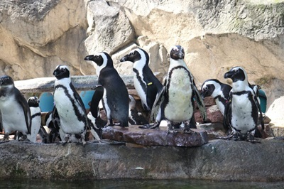

Seneca Park Zoo
Nestled along the banks of the Genesee River, Seneca Park Zoo is a hidden treasure where nature and adventure collide. This beloved zoo offers an up-close look at animals from across the globe while fostering a deep appreciation for wildlife conservation. Whether you're marveling at a lion basking in the sun, watching a red panda navigate the treetops, or catching sight of a rhino lumbering through its habitat, every visit promises something new. With its commitment to education and preservation, Seneca Park Zoo isn't just a place to see animals—it's a place to connect with the natural world.
African Penguins and Arctic Polar Bears
For me, no trip to the zoo is complete without a visit to the African penguins and polar bears. The penguins, full of personality, waddle along the rocky shore before diving into the water like sleek little torpedoes. Unlike their Antarctic cousins, these warm-weather birds thrive in the sun, proving that not all penguins need ice to be cool. On the other end of the spectrum, the polar bears steal the show with their sheer size and grace. Whether they're playfully splashing in the water or lounging in the shade, there's something mesmerizing about them—like watching a snowdrift come to life. These two species, so different yet so captivating, make every trip to the zoo a charm.